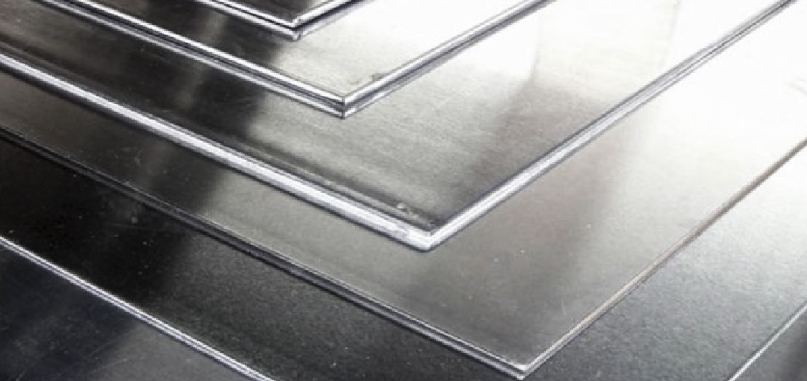

LA EMPRESA

VISIÓN
Ser la empresa más ágil y flexible de los mercados donde operamos.
Operatividad
Dinamismo
Metodología
Experiencia
Responsabilidad
MISIÓN
- Dar una respuesta específica a las necesidades de nuestros clientes.
- Mejora continua en la calidad de nuestros procesos.
- Búsqueda permanente en ampliar y mejorar nuestros servicios.
- El precio más bajo acorde a la calidad de los productos.
- Desarrollar nuestro negocio en forma rentable.
- Optimización permanente de los costos operativos.
- Ofrecer a nuestro cliente personal un excelente clima de trabajo con un alto compromiso con la organización.
VALORES
- 60 años de trayectoria en el mercado argentino.
- Somos financieramente sanos y cumplimos con nuestros pagos.
- Nuestro personal está altamente comprometido con la trayectoria de la empresa.
- Manejamos nuestros negocios con la más alta ética profesional.
- Nos abastecemos de los mejores proveedores a nivel mundial.
- Escuchamos y tratamos de entender las necesidades de nuestros clientes con el objetivo de satisfacerlos.
- Trabajamos con el objetivo de que nuestros productos estén al alcance de todos y en todas partes.